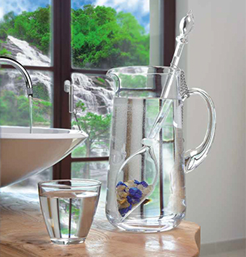

恭喜！
您可以通過VitaJuwel購買獨特手工製作的寶石小瓶。
請仔細閱讀以下說明，以確保持久的享受你的產品：
- 您的小瓶由玻璃製成。與同小心處理，因為你會處理一個珍貴的玻璃製成的飲用容器。避免撞擊，打擊。
- 您小瓶是不是洗碗機。由專人用微溫的自來水沖洗; 不要用化學物質或腐蝕性的清潔劑。
- 不要將小瓶置於溫度低於45°F或高於95°F。不凍結，煮或微波爐。
- 每次使用前，請確保您的小瓶無任何裂縫或其他損害。如果你的小瓶有裂紋或其它損壞，
請立即停止使用方法。受損的小瓶是不安全的使用情況和可能造成人身傷害。
如果你已經吞噬從你的產品的任何部分立即就醫！
- 在小瓶的液體輕微的變色可能是由於寶石，不損傷也沒有以任何方式使用此產品造成負面影響。
- 遠離兒童下6歲。